Cambodia Index: - 1 - 2 - 3 - 4 - 5 - 6 - 7 - 8 - 9 - 10 - 11 - 12
This was our last day in lovely Cambodia. We were to leave extremely early the following morning. We spent the morning helping and participating in the Joyce Meyer Leadership Conference. That evening we were to have helped with the festival, but there was an issue with the venue that caused the plans to change so we were not allowed to attend. I wish we could have been there, Joyce, Darlene, and Delirious? made history that night!
The story goes, the local leadership tried to shut Joyce's festival down by cutting off the power while she was in the middle of her talk. Not to be a woman who is easily stopped, she grabbed a bull horn and kept right on preaching. Then when they started to migrate the meeting out into the street to better accommodate the crowds, the officials locked the gate. Our hero Joyce was not slowed down a bit, the 60-something year old lady just climbed the fence, grabbed the bull horn, and kept right on going. That woman is amazing!
We did have a special meeting that night at the hotel which we called a
debriefing. Each person took a few minutes to speak about what they
learned from the trip and what moved them the most. It was a really
special time for us as a team and was a great way to end this significant
time in our lives.
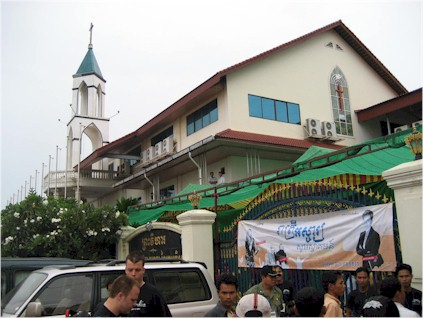
but the local authorities blocked that at the last minute. The professionals
at Joyce Meyer Ministries (and our friend Pisit from the New Life band)
pulled together another location in no time - this large church in the area.
I know, I'm obsessed with squatters.
I was finally getting the hang of them.
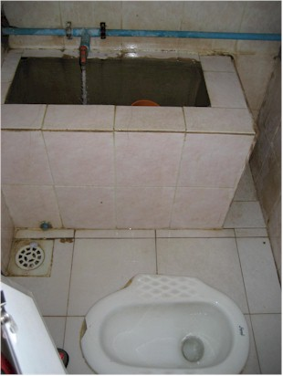
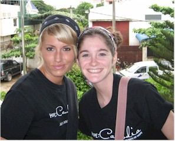
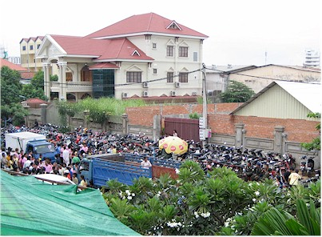
masterful parking job they did there.
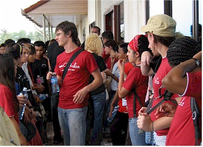
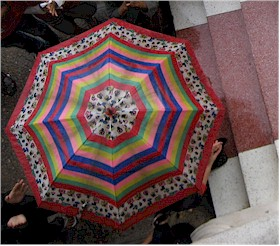
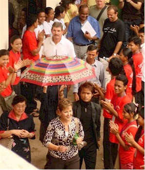
Luckily, Autumn had a much better vantage point. She took these awesome pictures with her phone!
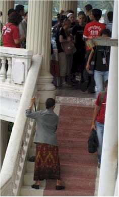
each person who went near her. She was so kind.
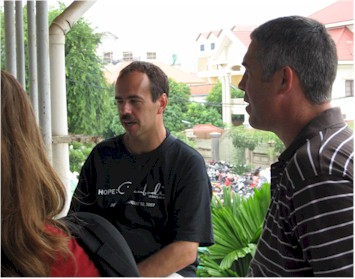
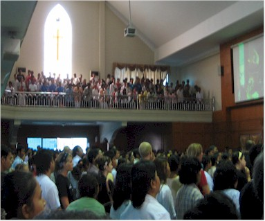
most of what happened in the 30 days of Hope. They were very
professional, impressive people.
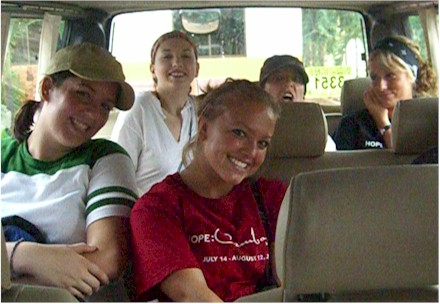
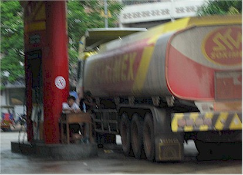
pay at the pump.

Our whole team - what a great bunch!
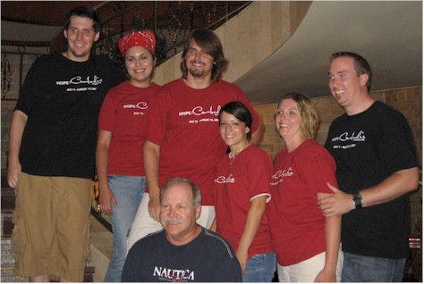
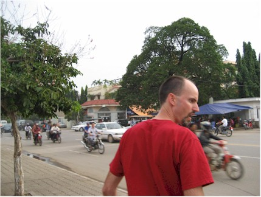
the street - because I wanted to go to the Star Mart to buy "Happy Dent"
for my Dad. (It was the name of a brand of gum that made me laugh.)
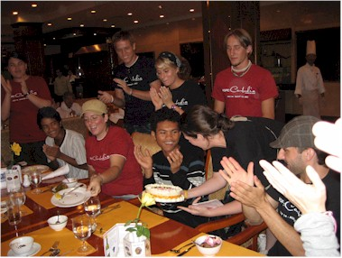
It was Sam's birthday so we had the hotel make a cake for him and
each interpreter. Here we have a little party for them.
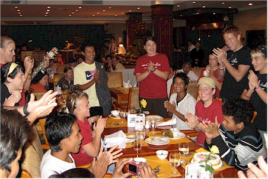
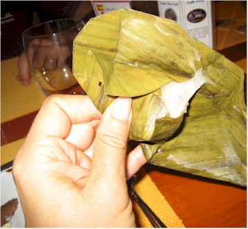
texture of paste and looked too much like mucus to enjoy.
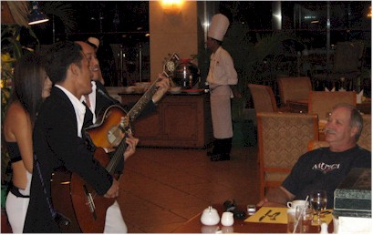
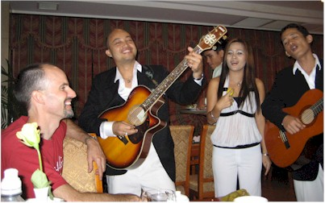
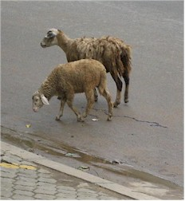
Seen from the hotel window during a meal...
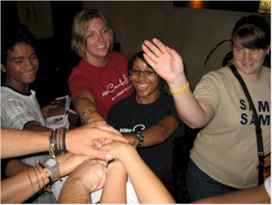


the slippers provided by the hotel.
Cambodia Index: 1 - 2 - 3 - 4 - 5 - 6 - 7 - 8 - 9 - 10 - 11 - 12